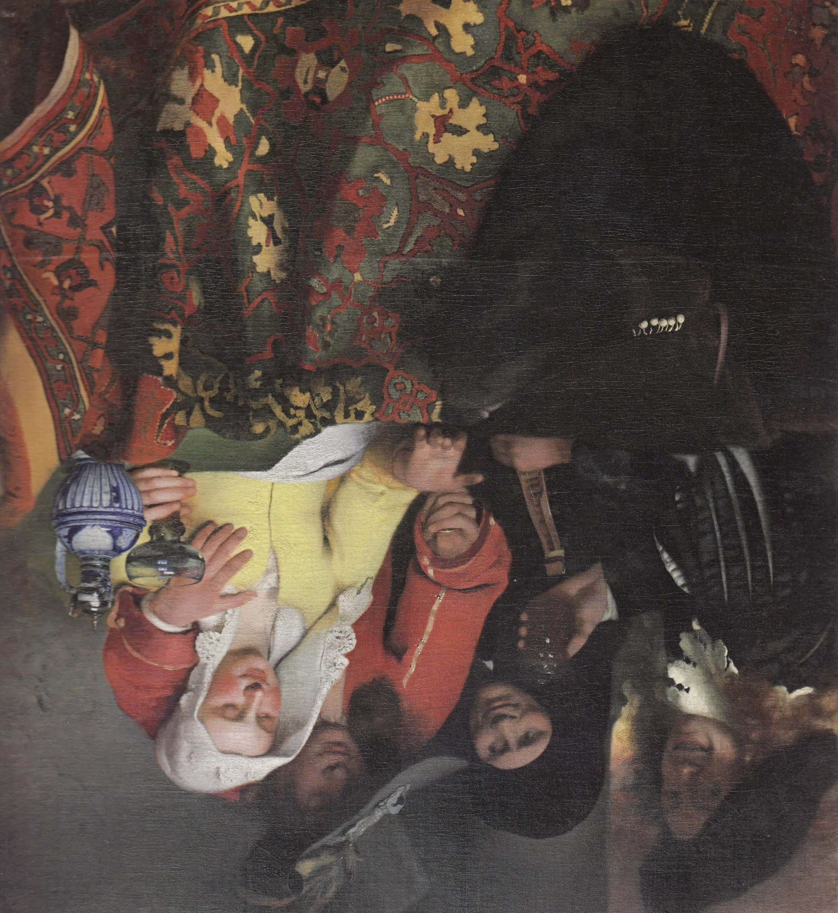
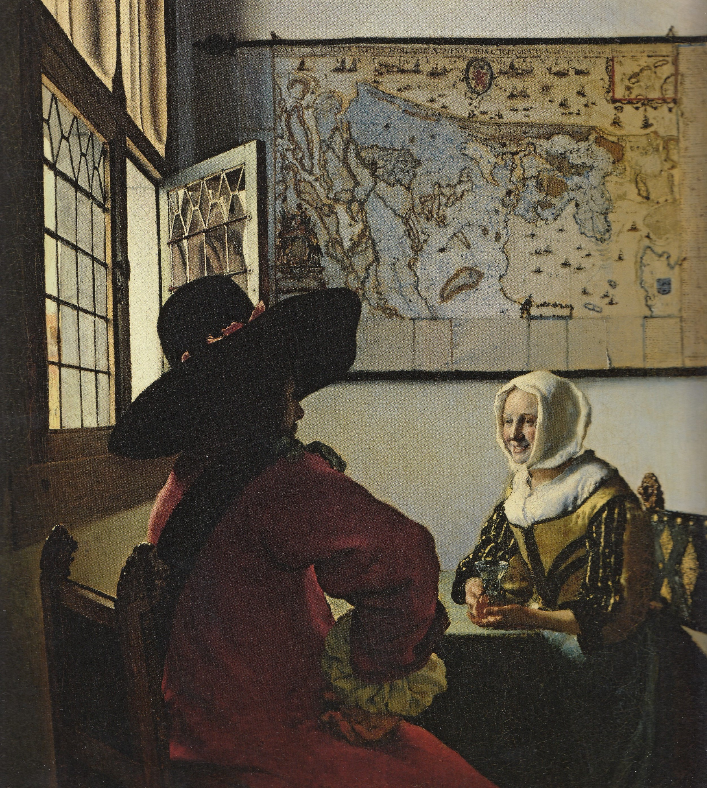
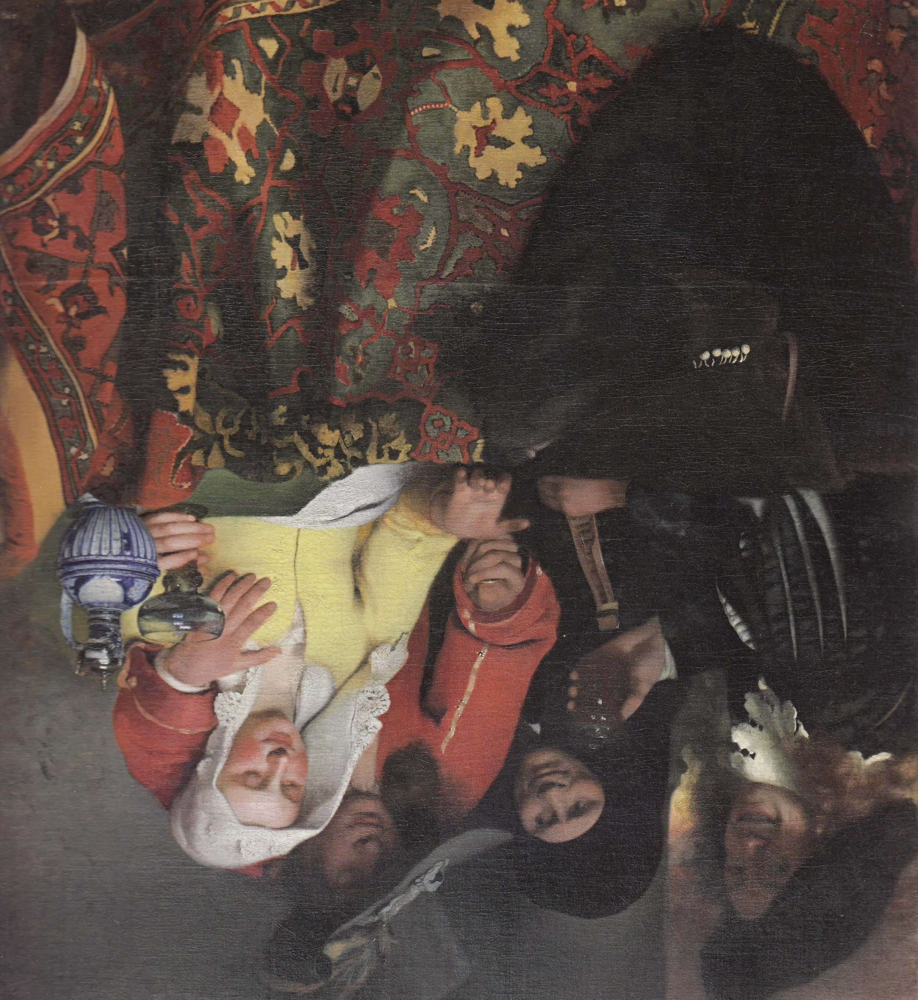
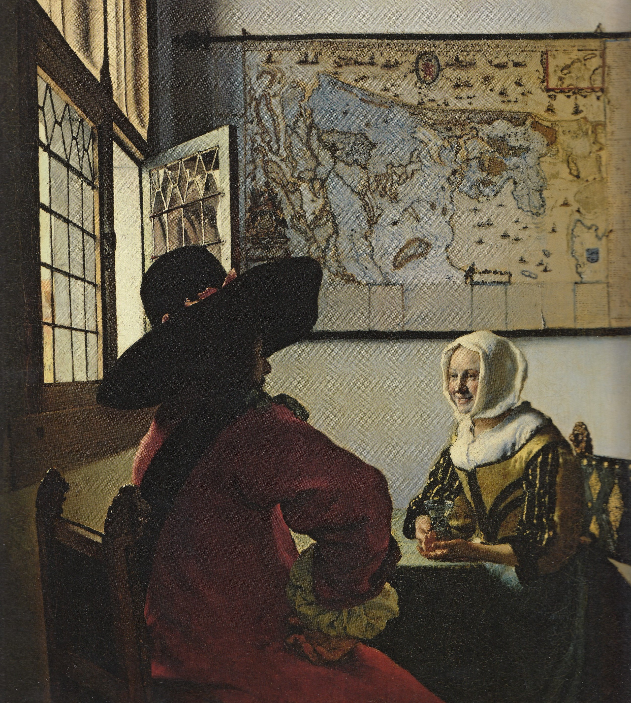
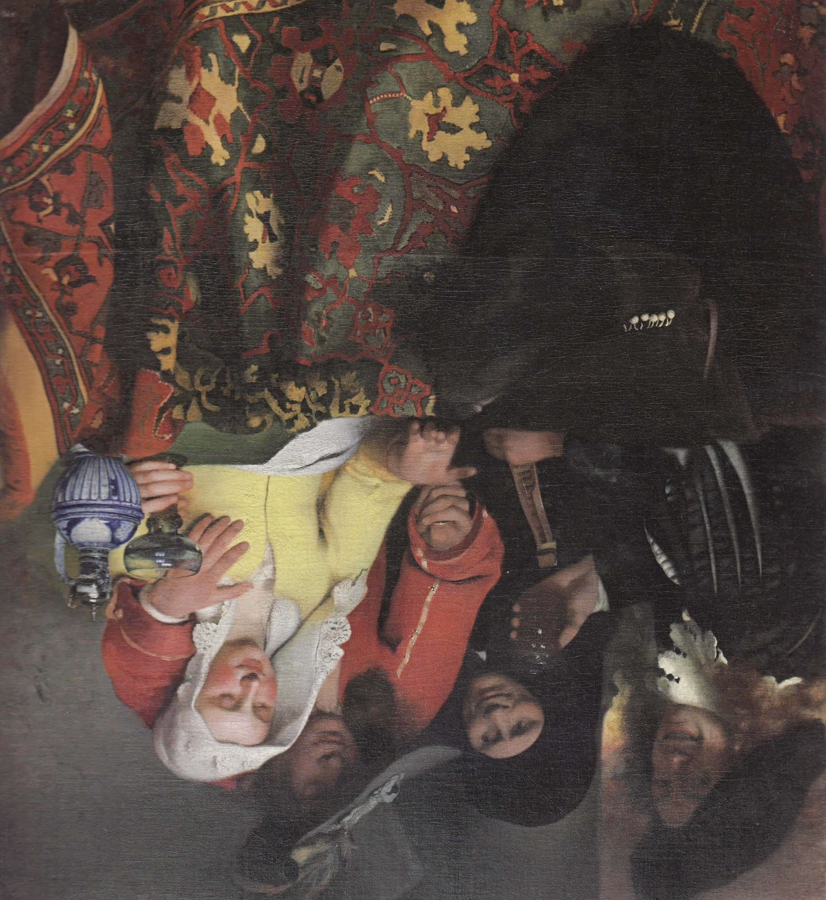
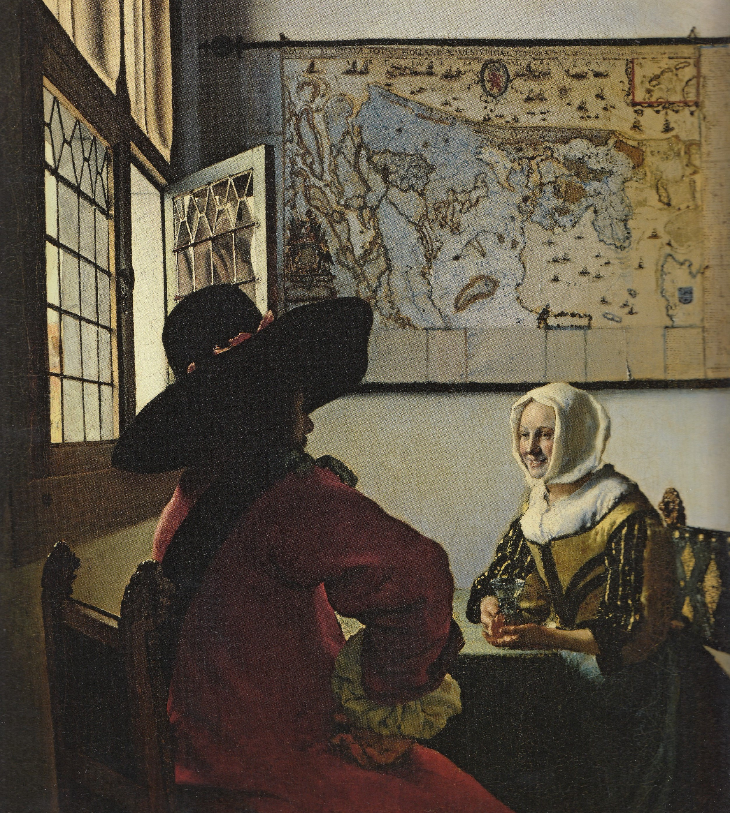

Gallerie
 



Johannes Vermeer (1632 - 1675) Johannes Vermeer était un maître de la peinture néerlandaise du Siècle d'or. Né en 1632 à Delft, aux Pays-Bas, il est principalement connu pour ses œuvres intimes et lumineuses, caractérisées par une maîtrise exceptionnelle de la lumière et de la couleur. Vermeer a consacré sa carrière à créer des tableaux exquis et détaillés, souvent centrés sur des scènes de la vie quotidienne, de l'intérieur d'une maison à des portraits subtils. Sa technique unique, basée sur l'utilisation de la caméra obscura et une grande attention aux détails, a permis de capturer la réalité avec une précision remarquable. Parmi ses œuvres les plus célèbres, on trouve des chefs-d'œuvre tels que "La Jeune Fille à la perle" et "Vue de Delft". Bien que Vermeer n'ait produit qu'un nombre limité de tableaux au cours de sa vie, son héritage artistique perdure grâce à la beauté intemporelle de ses créations. Vermeer est décédé à Delft en 1675, mais son influence sur l'art et la peinture demeure indéniable, et ses toiles continuent d'émerveiller les amateurs d'art du monde entier.

